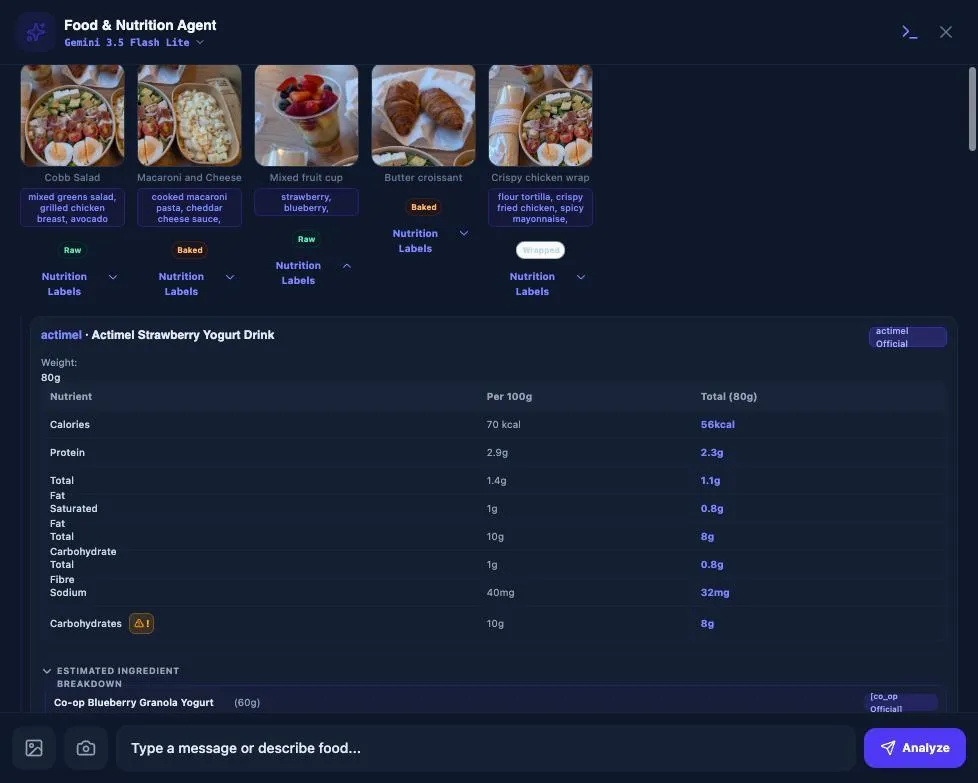
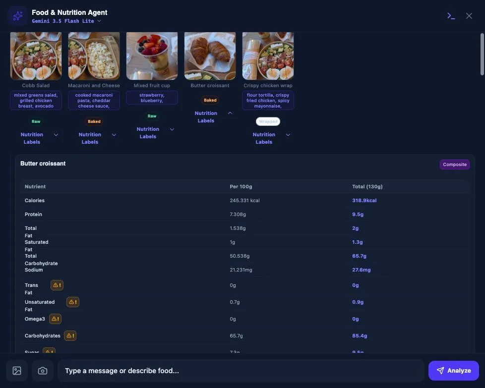
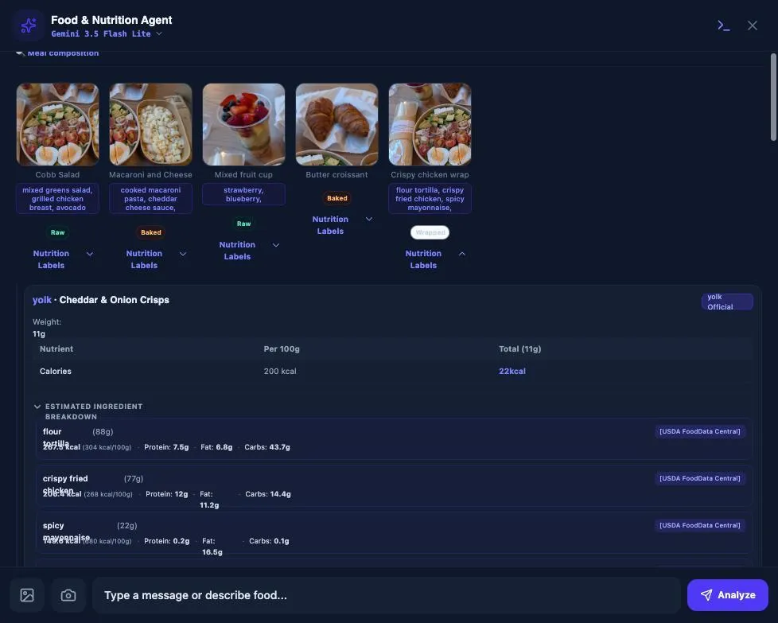
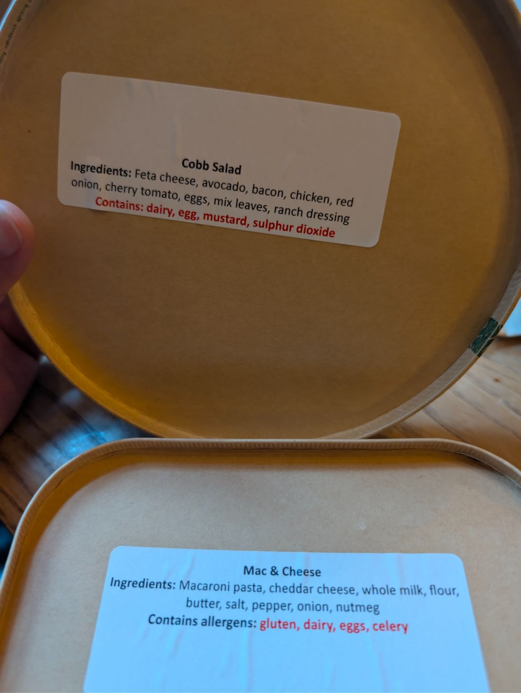
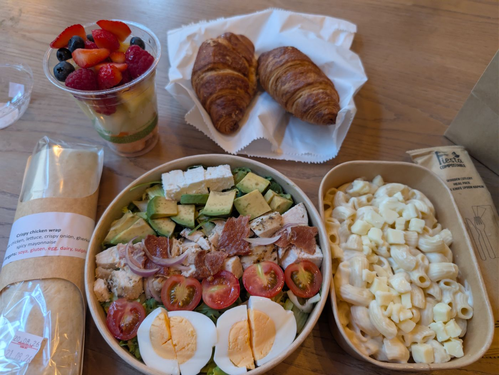

Same meal as live #10 Incorrect meal. Nothing from Golden Meal snap / Inbox / tracker NOW is deleted — scout identity and top dishes are back on the snap; Checks/Dishes/Identity/Balance are still on review. Add bug + pin selected shot are real controls on screen 1.
Select a shot in the film (blue ring), select a bug row (blue border), press Pin shot to selected bug. + Add bug appends a row. That is the assignment model: one film, many remaining lines.
Snapshotfoodcart · job on screen
Film — click a shot to select, then pin it to a bug

01 fruit

02 croissant

03 wrap

04 lids

05 table
Meal · Cobb Salad with Mac & Cheese, Fruit Cup, Croissant, Crispy chicken wrap 2584 kcal · 1 serving
Scout identity — 13/26 identified (from /preview · was Golden Meal tab)
Cobb Salad
mixed greens saladfallback
grilled chicken breastfallback
feta cheesecatalog
hard boiled eggcatalog
Fruit Cup
raw strawberrybrand Actimel
raw blueberrybrand Co-op granola
Butter croissant
enriched wheat flourUSDA
butter / milk / sugarcomposite staple
Crispy chicken wrap
flour tortillacatalog
crispy onionyolk Cheddar & Onion Crisps
spicy mayonnaisemismatch
Top dishes — target values (was Golden Meal table)
Leave kcal empty = must appear. Score checkbox = include in dish checks.
Dish
kcal
g
P
✓
Cobb Salad
505
400
✓
Mac & Cheese
594
350
✓
Fruit Cup
341
200
✓
Croissant
319
130
✓
Crispy chicken wrap
828
220
Select a film shot (blue), select a row (blue), then Pin shot. + Add bug for another line. Same photo can pin to two bugs (02 = contrast and croissant).
Also spotted on tape — uncheck to drop
Auto BRAND_LEAK · never_coop_granola · same shot as Actimel
Auto MICROS_ZERO
Auto SILENT_REPAIR · parked (off) · not your named series
Capture pack — 6/6 (was snapshot checkboxes)
#10 Incorrect mealhuman to do
foodcart · job_7rnxfccw5 · you snapped just now · Last loop: you · snap
6 Fixed so far · 6 remaining · 1 need analyze · 1 accept
NOW — next agent (tracker)
Primary: chicken wrap ≠ Yolk official. Do not touch Actimel / croissant / contrast in this job.
Class: FALSE_FRIEND (dropdown) · Tape held · burns 0/2
Tried: none yet
Context: query “Analyze this meal photo.” · debug JSON + scout.json held · domain pack food
More — catalog · pipeline · downloads · Promote · Mark fixed
Run until green is gone (410). Catalog does not flip remaining.
Remaining = these rows. Done on a line parks it. Primary is the one Hand off sends.
Chicken wrap ≠ Yolk officialPrimary
“The chicken is absolutely not yolk official” · FALSE_FRIEND · crispy onion → Cheddar & Onion Crisps
Mixed fruit ≠ ActimelRemaining
Shot 01 · strawberry → Actimel 80g Official
Co-op granola on fruitAuto
Butter croissant ≠ compositeRemaining
Composite badge · flour+butter+milk+sugar
Contrast / copy unreadableRemaining
CLONE_UI · duplicate carbs, warnings on numbers
Fruit cup 20 micros at 0Auto
Need analyze (not remaining until Re-analyze): spicy mayonnaise mismatch. Parked: wrap scale 827→450.
Top dishes — expected vs tape (same table as snap)
Dish
Expected
Tape
Cobb Salad
505 · 400g
505 / 400
ok
Mac & Cheese
594 · 350g
594 / 350
ok
Fruit Cup
341 · 200g
Actimel + Co-op + zeros
red
Croissant
319 · 130g
Composite badge
red
Crispy chicken wrap
828 · 220g
Yolk crisps · scaled 450
red
Scout identity — full journey + resolution (not reds-only)